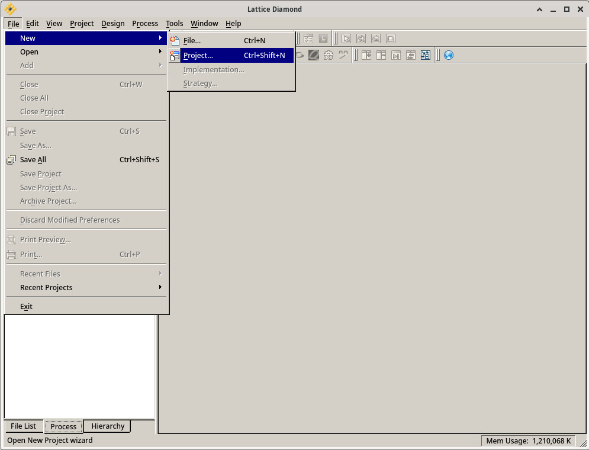
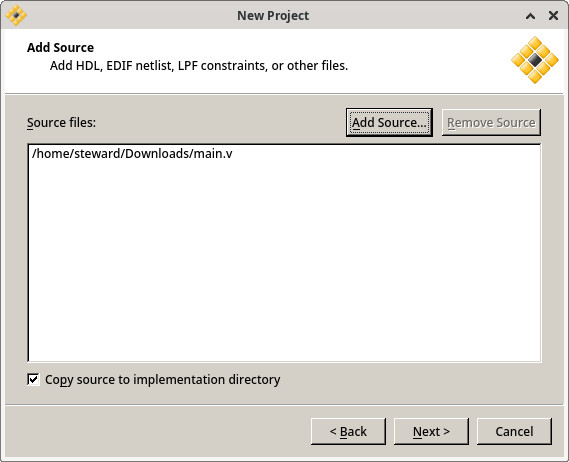
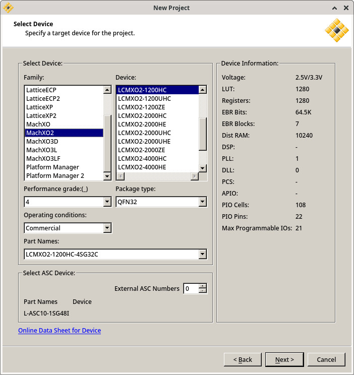
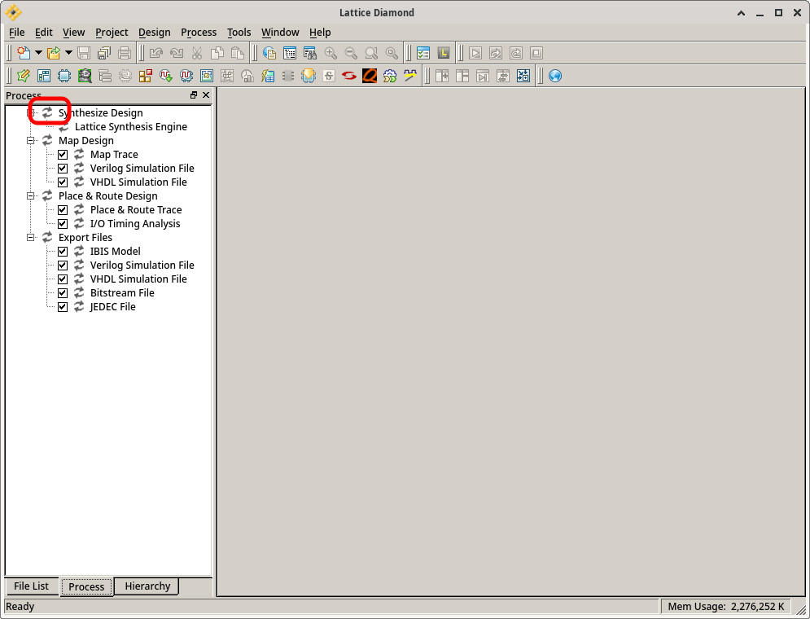
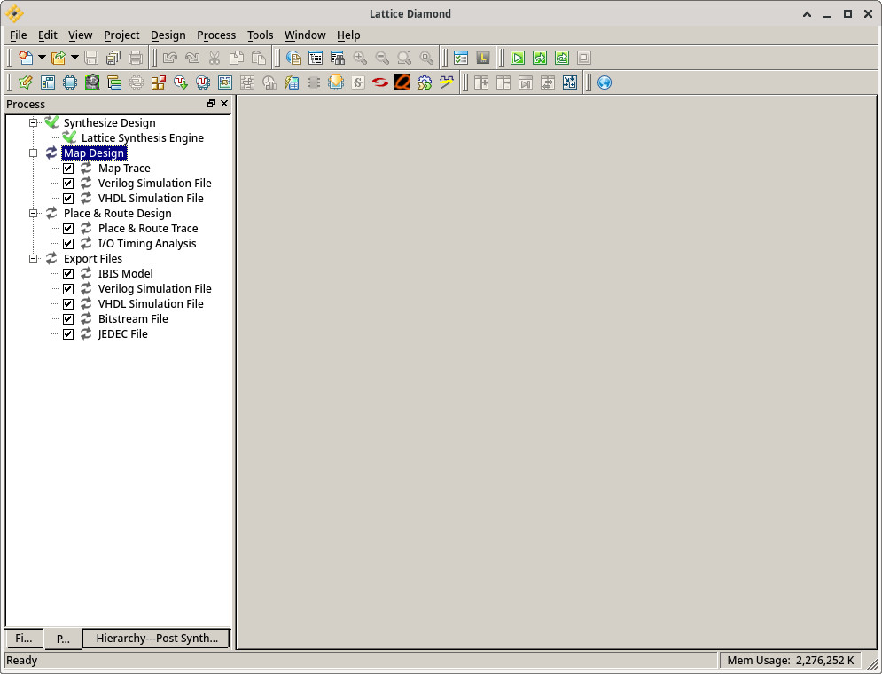
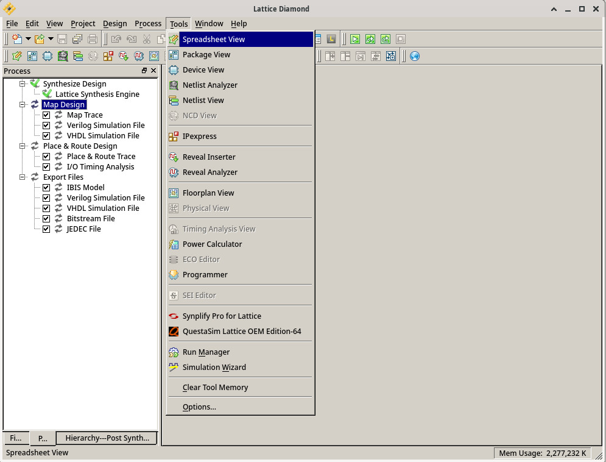
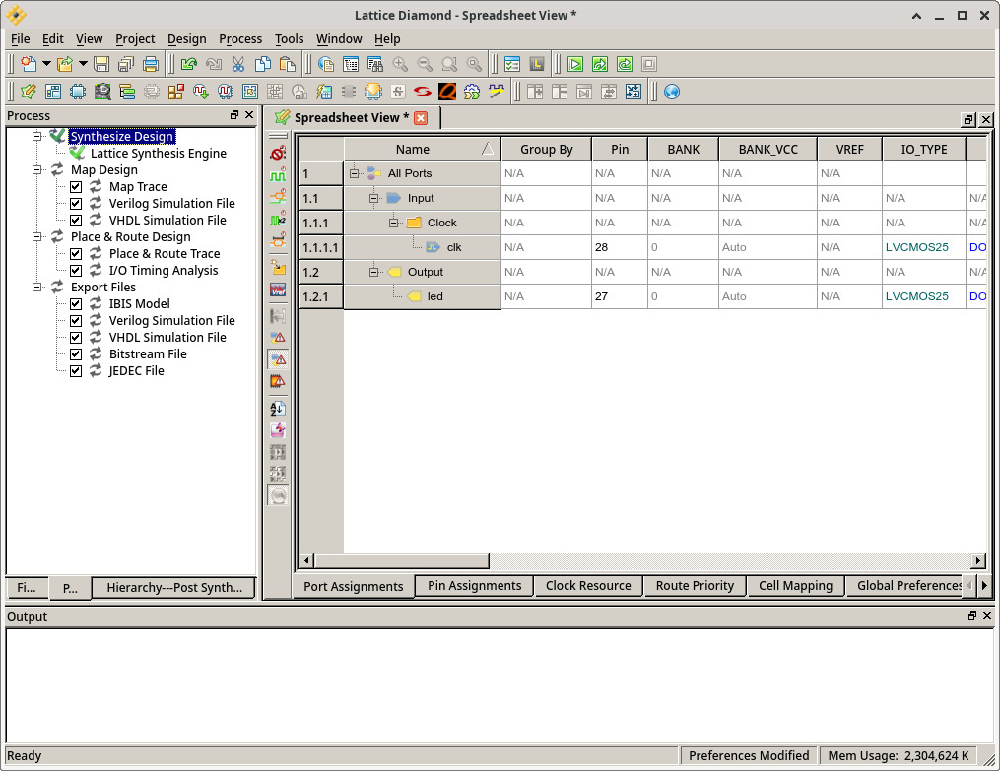
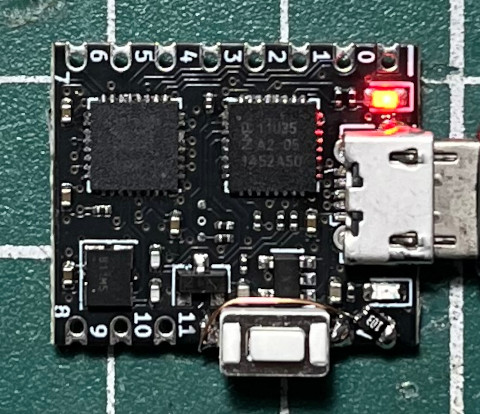
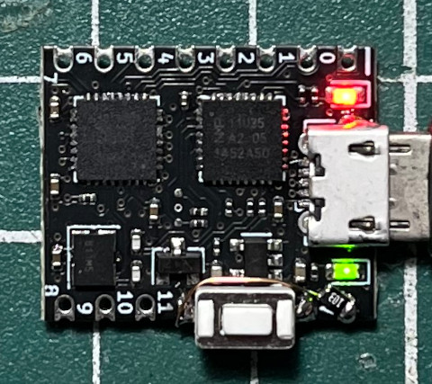

main.v
module main (
input clk,
output reg led
);
reg [23:0] clk_cnt;
always @(posedge clk) begin
if (clk_cnt == 24'd10000000)
clk_cnt <= 24'd0;
else
clk_cnt <= clk_cnt + 1;
if (clk_cnt == 24'd10000000)
led <= ~led;
end
endmodule
New => Project











